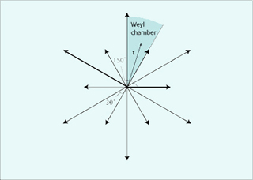

Projection of the E_6 root system into the Coxeter plane by John Stembridge. (See here for more pictures and an explanation.)

Spring 2015, TTh 1:00 - 2:15, LOM 205.
Office hours: Wed 2:30-4pm, 404 DL.
The course is intended for freshman/sophomore/junior mathematics majors and junior/senior science majors. It is designed as a link between the introductory-level mathematics curriculum (Linear algebra), and more advanced courses available to mathematics and physics majors (Abstract Algebra, Representation Theory, Lie Algebras).
Topics include:
review of Euclidean vector spaces and orthogonal transformations; reflections in
a real Euclidean space, groups generated by reflections, Coxeter groups,
classification of finite Coxeter groups.
Reading:
C.T.Benson, L.C.Grove, Finite Reflection Groups , Second Edition, Springer, 2010;
with occasional use of additional sources:
R.Kane, Reflection Groups and Invariant Theory , CMS books in Mathematics, Springer, 2001 (Chapters I-II);
J.Humphreys, Reflection Groups and Coxeter Groups , Cambridge studies in advanced mathematics 29 Cambridge University Press 1990 (Chapters I-II).
Projection of the E_6 root system into the Coxeter plane by John Stembridge. (See here for more pictures and an explanation.)